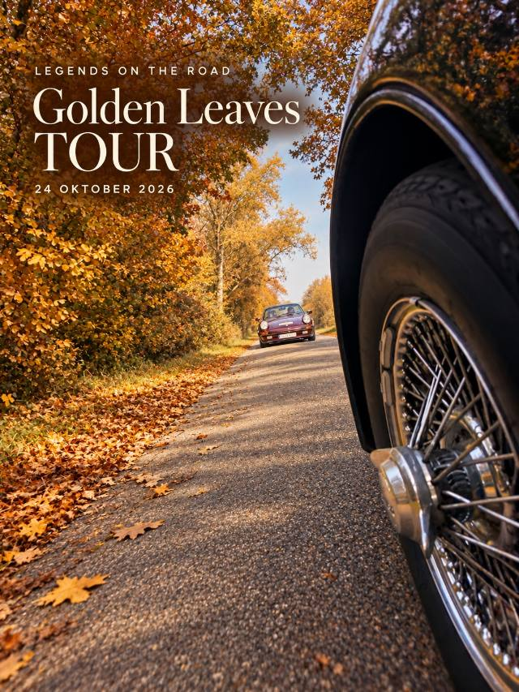

Een herfstdag in de Kempen
Golden Leaves Tour
Een dag vol herfstkleuren, mooie auto’s en fijne ontmoetingen. Vanuit Unit M in Kalmthout trokken we met 32 auto’s door de Kempen. Onderweg genoten we van een koffiestop bij Boshuys Klein Utrecht en een lunch bij De Notelaar in Kasterlee.
Na een tussenstop bij De Bosrust in Essen sloten we de dag samen af in het Kasteel van Kapellen, met een aperitief, diner en prijsuitreiking. Een warme afsluiter van een mooie rallydag.
KALMTHOUT · KLEIN UTRECHT · KASTERLEE · ESSEN · KAPELLEN
Bekijk de foto’s van deze rally